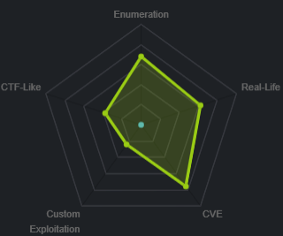

Windows Boxes
chatterbox
nmap
all ports
targeted
AChat
serachsploit
code
initial foothold
msfvenom
buff overflow code
user Alfred enum
priv esc w/ icacls
priv esc with powershell
msfvenom w/ powershell reverse tcp payload
msfvenom with cmd/exec download
msfvenom windows/exec
listener on 6666
powerup.ps1
privileged reverse shell
user/root
Lessons learned
chatterbox
